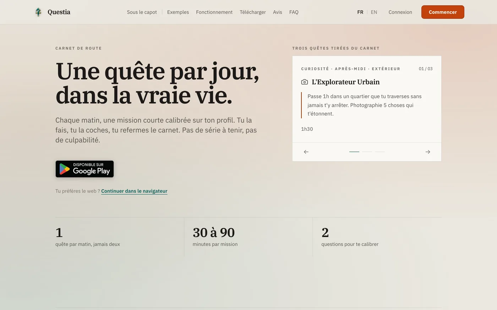

Questia, une quête par jour
pour chaque joueur
Une application qui propose chaque matin une mission courte à faire dans la vraie vie, calibrée sur le profil de la personne. Application Android publiée sur le Play Store, application web, un seul compte, une seule base de code.
Voir Questia en ligne Parler d'un projet

- Rôle
- Conception, développement, publication
- Surfaces
- Application Android sur le Play Store, application web, même compte
- Technologies
- Expo / React Native, Next.js, TypeScript partagé, PostgreSQL, modèle de langage
- Particularité
- Moteur de profil déterministe qui encadre la génération de texte
- En ligne
- questia.fr · Google Play
Une liste de tâches
ne se termine jamais
Les applications de motivation empilent des objectifs, comptent les jours consécutifs et rappellent à leur utilisateur tout ce qu'il n'a pas fait. Au premier jour manqué, la série tombe et l'application se désinstalle.
Le pari de Questia est inverse : une seule mission par matin, avec une fin nette. On la fait ou on la refuse, et il n'y a rien derrière. Pas de série à tenir, pas de rattrapage, pas de tableau de bord qui rappelle son retard à quelqu'un qui a déjà une semaine chargée.
Le problème intéressant n'est donc pas de gérer des tâches, c'est de proposer la bonne mission. Trop facile, elle ne vaut pas le déplacement. Trop ambitieuse, elle est refusée et la personne ne revient pas le lendemain. Toute la difficulté du produit tient dans ce réglage, et c'est là qu'est passé l'essentiel du travail.
Deux questions, puis
une mission par matin
- Deux questions au départ : ce qu'on aime, ce qu'on est prêt à tenter, et c'est tout pour commencer
- Une quête par matin : trente à quatre-vingt-dix minutes, une fin claire, le droit de refuser sans conséquence
- Un contexte pris en compte : météo, ville, jour de la semaine, pour ne pas proposer une sortie sous l'orage un mardi à 7 h
- Deux surfaces, un compte : l'application Android et le site partagent le profil, l'historique et la progression
- Des garde-fous explicites : consentement avant une quête physique, repli sur une mission calme quand les conditions ne s'y prêtent pas
Le produit est bilingue, gère les notifications, le partage d'une carte de quête, les pages légales et une boutique. Rien de tout cela n'est visible dans une démonstration de deux minutes, et tout cela est obligatoire pour qu'une application existe ailleurs que sur le téléphone de son auteur.
Un modèle de langage
tenu par un moteur
Demander directement des idées de sortie à un modèle de langage donne une liste plausible, générique et sans mémoire. Ce n'est pas un produit, c'est une démonstration.
Questia sépare donc deux responsabilités. Un moteur écrit en TypeScript décide quoi proposer : il compare le profil déclaré à un profil déduit de l'historique, mesure l'écart entre les deux, en tire une phase de progression et une intensité cible, puis choisit une famille de quête et une durée. Ce moteur est déterministe, testé, et ne demande rien à personne.
Le modèle de langage n'intervient qu'ensuite, pour écrire la mission dans ces limites : famille imposée, intensité imposée, durée imposée, contexte du jour fourni. Sa sortie est validée avant d'être servie, et si l'appel échoue ou renvoie quelque chose d'invalide, un tirage déterministe dans la même famille prend le relais. L'utilisateur reçoit sa quête, que le fournisseur soit debout ou non.
C'est la question que je pose à chaque projet où l'on veut mettre de l'IA : que se passe-t-il quand le modèle répond mal, répond lentement, ou ne répond pas ? Si la réponse est « l'écran reste vide », la fonctionnalité n'est pas finie. Le même raisonnement qu'à propos des sources citées dans Zendra : ce qui rend un produit utilisable au quotidien n'est presque jamais la partie qu'on montre en démonstration.
Une base de code
pour le mobile et le web
L'application Android est développée en React Native avec Expo, le site en Next.js. Les deux vivent dans le même dépôt et partagent le même TypeScript : les types, les constantes, le moteur de profil et une partie de l'interface sont écrits une fois. Une règle de calibrage corrigée est corrigée des deux côtés, ce qui évite la dérive classique où le mobile et le web finissent par ne plus tout à fait dire la même chose.
Ce n'est pas le bon choix partout. Sur Splaze, les applications sont écrites en Swift et en Kotlin, parce que le produit demande ce que chaque plateforme fait de mieux. Ici, une personne seule devait tenir deux surfaces à jour : mutualiser était le seul moyen de sortir l'application sans laisser le site derrière. Le choix se décide projet par projet, et je le pose au cadrage plutôt qu'après coup.
Publier, c'est un
métier en plus
Questia est en ligne sur questia.fr et publié sur le Google Play Store. Entre l'application qui tourne sur mon téléphone et l'application téléchargeable, il y a eu la signature des binaires, la fiche du magasin, le questionnaire de classification, le formulaire de sécurité des données, la politique de confidentialité, les conditions de vente, la vérification que rien dans les textes ne laisse croire à une promesse thérapeutique, et plusieurs allers-retours de révision.
C'est la partie que les devis oublient et que je chiffre séparément, parce qu'elle se compte en jours et qu'elle bloque une sortie de plusieurs semaines quand on la découvre à la fin. Avoir franchi cette étape sur mes propres produits est précisément ce qui me permet de la cadrer sur les vôtres : voir la page développeur d'application mobile.
Ce qu'on me
demande ensuite
- Combien coûte une application mobile de ce genre ?
- Cela dépend surtout du nombre de surfaces et de la présence de comptes et de paiements. Le simulateur donne un ordre de grandeur en deux minutes, et je le confirme après un échange.
- Faut-il une application native ou une base partagée ?
- Une base partagée quand les deux plateformes font la même chose et que l'équipe est petite, du natif quand le produit dépend de ce que chaque système fait de mieux. Je tranche au cadrage, avec l'argument correspondant.
- Prenez-vous en charge la publication sur les magasins ?
- Oui : comptes développeurs, signature, fiches, questionnaires de confidentialité et de classification, puis les révisions jusqu'à la mise en ligne. C'est une ligne à part du devis, parce que c'est un vrai travail.
- Mon produit a-t-il besoin d'un modèle de langage ?
- Souvent non. Quand la réponse est oui, il faut décider dès le cadrage ce qui se passe si le modèle échoue, ce qui est envoyé au fournisseur et ce qui reste chez vous. Ces réponses figurent au devis, pas après la mise en ligne.
Voir aussi
Une application mobile
à sortir vraiment ?
Le simulateur donne une fourchette en trente secondes, sans inscription. Elle part avec votre message si vous décidez de m'écrire, et je réponds sous 24 heures ouvrées.